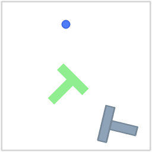
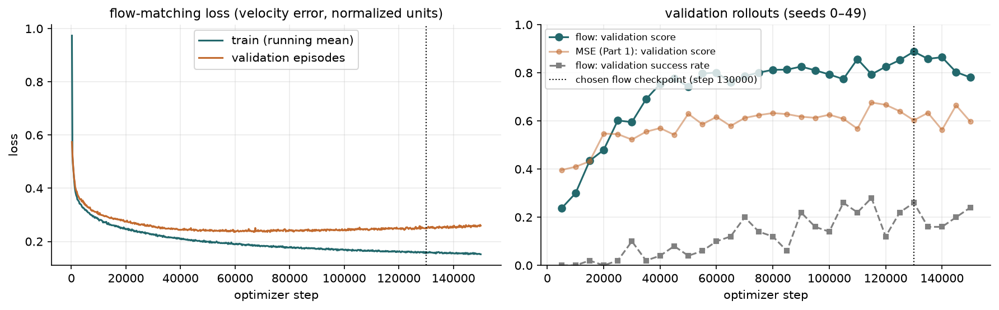
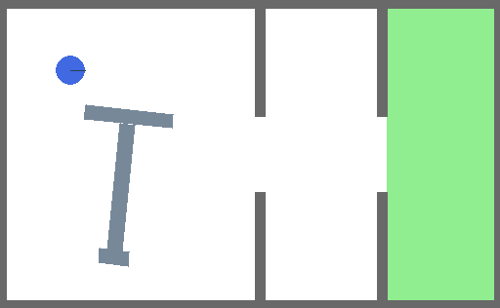
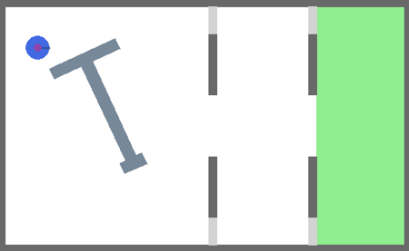
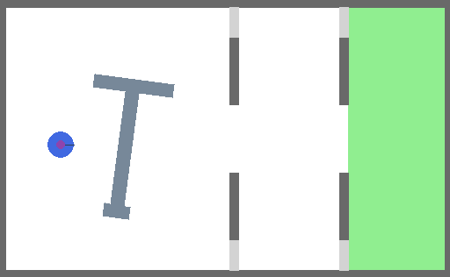
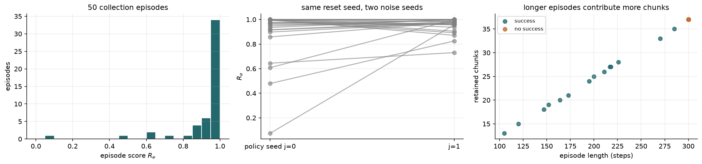
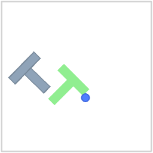
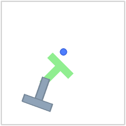
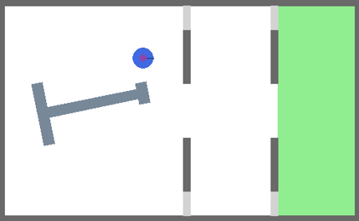
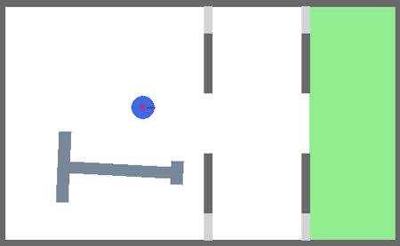

Experimental Setup
PushT (gym_pusht/PushT-v0, state observations): $o_t\in\mathbb R^5$ (pusher position, T position, T angle), $a_t\in\mathbb R^2$ (the pusher's target position), chunks $A_t\in\mathbb R^{8\times 2}$ ($K=8$). A chunk is predicted, its 8 actions are executed in order, and the policy is queried again; an episode ends immediately on termination or truncation (300 steps).
| Item | Choice |
|---|---|
| Split | 206 demonstrations split by episode, 80/20, seed 0 → 165 train / 41 validation episodes |
| Normalization | mean/std of training episodes only, reused unchanged in Parts 1–3; predicted chunks denormalized and clipped to $[0,512]^2$ |
| Networks | MLP, 3 × 256, ReLU (MSE: 5 → 16; flow: 22 → 16); Adam 3×10−4, batch 128, 150k steps, seed 0, CPU. Width 256 was chosen over the suggested 128 in a validation-only pilot. |
| Seeds | validation resets 0–49 (checkpoint choice), test resets 1000–1099 (reporting only), Part 3 collection 2000–2024; flow policy-noise seed = reset seed |
| Score | $R_e=\max_t r_{e,t}$ per episode, averaged over episodes; success rate from info["is_success"] reported separately |
Starter code
Built on the UC Berkeley CS 185/285 (Spring 2026) Assignment 1 starter code. Its data.py (dataset download/loader, Normalizer, chunk windows) is used unmodified. I implemented both policies, their losses and the Euler sampler, the training loop, the episode-level split, validation-based checkpoint selection, the seeded evaluation loop (adapted from the starter's evaluate_policy) and all of Part 3; W&B logging was replaced by local CSV logs.
Part 1: MSE Policy Results
Task 1Prepare and inspect the demonstrations
| Train | Validation | |
|---|---|---|
| Episodes | 165 | 41 |
| Valid chunks ($K=8$, inside one episode) | 19,529 | 4,679 |
| Tensors (observation, chunk) | [19529, 5], [19529, 8, 2] | [4679, 5], [4679, 8, 2] |

One action $a_t=(x,y)$ is the pixel position the pusher is driven toward by the simulator's PD controller, not a force; the pusher lags it ($|a_t-p_{t+1}|$ = 11.9 px vs. $|a_t-p_t|$ = 19.8 px), so a chunk is a path of eight way-points (0.8 s).
Chunks must stay inside an episode because episodes are stored back to back: a window over the seam pairs the last state of one demonstration with actions from an unrelated one. A naive window would create 1,435 such chunks, with a median jump of 164 px between consecutive actions at the seam versus 8 px inside an episode.
Task 2Implement and train the MSE policy

Why squared error tends toward the conditional mean. For a fixed observation, $\mathbb E_{A\mid o}\|f-A\|^2$ is minimized by $f=\mathbb E[A\mid o]$. When different valid chunks exist for similar observations (e.g. going around the T on either side), the loss-optimal prediction lies between them, a path no demonstrator took. Whether this hurts is empirical: at the most ambiguous training observation (12 nearest neighbours from other episodes), the trained network's chunk lies 17.6 px from the closest expert chunk and 46 px from their average, i.e. this high-capacity network largely separates nearby observations rather than averaging them.
Task 3Evaluate the learned behavior
| MSE policy · test seeds 1000–1099 | Value |
|---|---|
| Score, mean ± std of $R_e$ | 0.575 ± 0.397 |
| Success rate | 11% |
| Rollout runtime, 100 episodes · per policy query | 7.7 s · 0.11 ms |
Rollouts (2× speed; blue pusher, gray T, green target, red cross = current action)


Imitation loss vs. task performance. The loss is measured open loop on expert states, weighting every coordinate equally. The score is closed loop: each executed chunk changes the next state, errors compound over ~37 queries into states the demonstrators never visited, and a few-pixel error at a contact can decide whether the T turns. Accordingly, validation loss is lowest near step 10k (0.091) and then rises, while the validation score keeps improving (Spearman correlation between validation loss and score across checkpoints: +0.66).
Failures were mostly getting stuck, e.g. dithering at a T corner near a wall, or (on unfamiliar starts) predicting targets outside the arena and pinning the pusher to the wall after clipping. MSE regression still works fairly often: 35 of 100 episodes reach ≥ 0.9 and 11 succeed.
Long exposure · 4th of July, Morgantown, WV
Part 2: Flow-Matching Policy Results
Task 1Construct conditional flow-matching examples
The notebook's checks all pass: $A_\tau=\epsilon$ at $\tau=0$ and $A$ at $\tau=1$; $A_{0.25}=0.75\epsilon+0.25A$; the target $u$ and the network output have shape [B, 8, 2]; the input $[o,A_\tau,\tau]$ has 22 values. sample_actions(state, num_steps, generator) takes only the observation, so the clean chunk is never an input at sampling time.
Task 2Train the conditional velocity model
Same training cost as Part 1 (3 × 256 MLP, 150k steps, batch 128; 141,584 vs. 137,232 parameters). Measured CPU wall-clock training time was 444 s vs. 180 s, but it varies with machine load (an identical earlier run took 194 s vs. 272 s); the per-step cost is the same.

Task 3Generate action chunks and compare policies
Each query draws fresh $Z_0\sim\mathcal N(0,I)$ and integrates $Z_{n+1}=Z_n+\tfrac1N v_\theta(o,Z_n,n/N)$ with $N=10$ and $o$ fixed. These 10 steps are network evaluations, not pushes; only then are the 8 actions of $Z_N$ denormalized, clipped and executed.
| Test seeds 1000–1099 | MSE (Part 1) | Flow, $N=10$ |
|---|---|---|
| Score, mean ± std of $R_e$ | 0.575 ± 0.397 | 0.840 ± 0.265 |
| Success rate | 11% | 22% |
| Rollout runtime, 100 episodes · per policy query | 7.7 s · 0.11 ms | 9.3 s · 0.57 ms |
On the same seeds, flow − MSE = +0.265 (bootstrap 95% CI 0.17 to 0.36). Sampling costs 10 network calls per query (~5× the policy time), but physics dominates, so a rollout is only ~20% slower.

Flow rollouts (2× speed)


The checkpoint was chosen on validation only and saved unchanged (checkpoints/flow_policy.pt; Part 3 verifies its SHA-256).
Addition: ant-maze PushT
A harder layout modelled on the ant-versus-human "piano-movers" maze (Dreyer et al., PNAS 2025): a long-stemmed T (90 px crossbar, 130 px stem) must be pushed through two 78 px slits, narrower than its crossbar, into a nest. A configuration-space search confirms it cannot pass at any fixed angle or within any 30° window; it needs at least a 60° turn. Light-gray doors let only the pusher change chambers. PushT's kinematic pusher is replaced by a force-limited one so it cannot pass through walls or the T (worst measured overlap about 3 px). With no human demonstrations available, 250 demonstrations came from a scripted simulation-based planner. A ~4M-parameter flow-matching policy trained with the Part 2 recipe ($K=8$, $N=10$) on a GPU reaches 84% success on 50 test starts (planner: 100%).
Ant maze (4× speed; green = nest). GIFs replay the recorded states of the reported test episodes.



Part 3: Reward-Weighted Fine-Tuning Results
Task 1Collect rollouts and attach outcome feedback
The unchanged Part 2 policy ran 25 collection seeds (2000–2024) × 2 recorded noise seeds, without rendering. At every query the starting observation and the executed (denormalized, clipped) actions were saved with the episode ID and both seeds; incomplete final chunks were dropped, and $R_e=\max_t r_{e,t}$ (including their rewards) was attached to every retained chunk.
| Collection | Value |
|---|---|
| Episodes · environment steps · retained chunks | 50 · 13,483 · 1,663 (47 incomplete dropped) |
| Collection wall time | 4.8 s |
| Episode score: mean ± std · median · min · success | 0.920 ± 0.163 · 0.973 · 0.074 · 28% |

One saved pair, traced
Tuple #37 (episode 1, reset seed 2000, policy seed 50001, query 0) starts at $o=(144, 280, 152.4, 385.4, 3.31)$ and executes 8 actions moving the pusher from (132, 283) to (109, 338). Its reward was 0.051 for all 8 steps; the episode reached full coverage at step 163, so the chunk is labelled $R=1.0$.
Task 2Fine-tune with positive reward-based weights
B uses $w_j=1$, C the reward weights. Each branch is a fresh copy of the Part 2 checkpoint with a fresh Adam (lr 10−4), 300 updates of 64 collected + 64 demonstration chunks; $\mathcal L_{\mathrm{demo}}$ is recomputed with the branch's current weights. Each chunk's error is computed before its weight is applied. B and C with the same seed draw identical indices, $\epsilon$ and $\tau$; 3 fine-tuning seeds. The budget of 300 was kept after a validation-only check of 300 / 1,000 / 3,000 updates.
The weighting signal is weak: 45 of 50 episodes score above $\tfrac12\ln5\approx0.805$, so 89% of chunks share the capped weight (normalized weights 0.24–1.05). It is not zero, so the comparison is run as specified.
Task 3Compare, analyze and discuss
| Test seeds 1000–1099 | Score, mean ± std | Success |
|---|---|---|
| A · Part 2, frozen | 0.840 ± 0.265 | 22% |
| B · equal weights, seeds 0 / 1 / 2 | 0.815 / 0.782 / 0.804 (± 0.30–0.33) | 22 / 14 / 16% |
| C · reward weights, seeds 0 / 1 / 2 | 0.801 / 0.766 / 0.794 (± 0.30–0.34) | 21 / 19 / 14% |
Paired over the same test seeds (the three fine-tuned copies averaged): C − B = −0.013 (95% CI −0.037 to +0.010) and C − A = −0.053 (−0.096 to −0.012). Costs: collection 4.8 s; fine-tuning 0.5 s per branch (3.0 s for all six); the validation budget check 140 s.
Representative rollouts, fine-tuning seed 0. Seed 1082 (largest C − B gain):


Seed 1083 (largest C − B loss):



Failures and changed behaviour. With identical starting noise, B and C move the executed actions only ~5 px from A (C differs from B by ~0.5 px), yet per-seed scores change by 0.14 on average in both directions: in this contact-rich task small action changes flip outcomes, as on seeds 1082 and 1083. Typical regressions are over-pushing past the target and wandering after a near miss.
The evidence does not support the hypothesis. Reward weighting gave no detectable improvement over the equal-weight control, and fine-tuning on the policy's own rollouts slightly hurt relative to A. Why episode scores and starts can mislead:
- Saturated weights: A already scored 0.92 on the collection seeds, so the capped exponential barely varies the weights.
- Coarse credit: every chunk inherits its episode's best moment (tuple #37 above), including wandering before it and over-pushing after it.
- Initial-state difficulty and luck: the collection starts were easier than the test starts (0.92 vs. 0.84 for A), and two noise seeds on one start differ by 0.11 on average; a max-over-time score also credits brief lucky overlaps.
- Episode length: failed episodes run to 300 steps and contribute ~37 chunks against ~24 for successes, so uniform chunk sampling leans toward failures.
These conclusions rest on one Part 2 checkpoint (one training seed) and three fine-tuning seeds.
Addition: ant maze
Same protocol with the ant-maze policy as A (collection 94% successful; the 3 failed episodes supply 15% of the chunks, which C down-weights ~5×). On 50 test starts, success is A 84%, B 76 / 82 / 86%, C 80 / 86 / 90% (fine-tuning seeds 0 / 1 / 2): C − B = +4 points (95% CI −3 to +11), C − A = +1 point (−9 to +12). C is ahead of B on every seed, but the difference is not distinguishable from noise at this size.
Ant maze, start 1049 (where B and C differ most), fine-tuning seed 0:


Python 3.12.10, torch 2.15.0+cpu, gym-pusht 0.1.8, pymunk 6.11.1, laptop CPU (4 threads). Seeds: split 0, training 0, fine-tuning 0/1/2; every rollout records its reset seed and policy-noise seed. Notebooks part1–part3.ipynb take roughly 5–12 min each; checkpoints, normalizer, split, collection dataset and per-episode CSVs are included with the submitted code. The ant-maze additions come from extras.ipynb (torch 2.11+cu128 on an RTX 5090 Laptop GPU, ~40 min).
- UC Berkeley CS 185/285, Spring 2026, Assignment 1: Imitation Learning, starter code. github.com/berkeleydeeprlcourse/homework_spring2026/hw1
- Y. Lipman, R. T. Q. Chen, H. Ben-Hamu, M. Nickel, M. Le. Flow Matching for Generative Modeling. ICLR 2023.
- C. Chi et al. Diffusion Policy: Visuomotor Policy Learning via Action Diffusion. RSS 2023.
- J. Fan et al. Online Reward-Weighted Fine-Tuning of Flow Matching with Wasserstein Regularization. ICLR 2025, Sec. 4.2.
- T. Dreyer et al. Comparing cooperative geometric puzzle solving in ants versus humans. PNAS 2025.